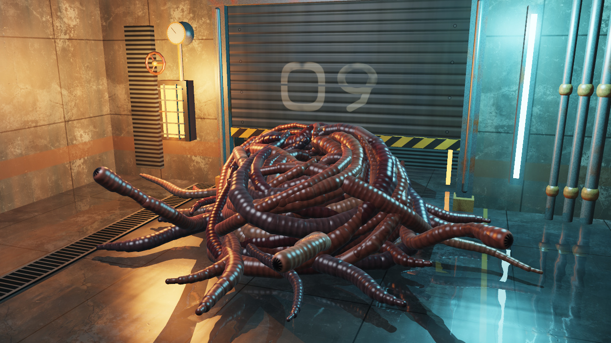
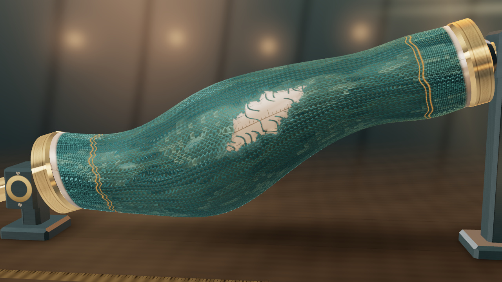

Night Shift · Native CUDA field manual
Light, material & motion
Follow the reflection of a passing train, trace the silhouette of a moving colony, or pull a stocking until the yarn splits. Each experiment asks which work the GPU can skip while preserving the shot you care about.
The course map schedules the platform and colony in Week 4, the fabric in Week 6, and the radio at the start of Week 8. Open the tracked lesson for your checklist, notes, quiz and completion. Use that checklist as your stopping point for the day. Come back to the second-pass experiments here when you want to investigate a scene further.
Open the workbench
Open the gallery on any screen for recorded films, stills, normals and feature comparisons. On Windows, double-click Start Night Shift.cmd in your course folder to open the editable renderer. Alternatively, double-click Course PowerShell.cmd and run the commands below. Commands throughout this guide assume that terminal starts at the course root.
python -B labs/nightshift/nightshift.py --scene lighting --check
python -B labs/nightshift/nightshift.py --scene lightingUse 64-bit Python, an NVIDIA driver and a compatible NVRTC runtime compiler. The scenes compile their CUDA C++ when opened. Soundstage also uses NumPy and Pillow to load the bundled model and photographs. The course machine’s existing Python includes these packages. The other three native scenes use Python’s standard library, Tk for the live window, and the CUDA runtime compiler and driver. Choose PPM for a dependency-free frame export, or PNG or JPEG with Pillow. For toolkit locations, compiler selection and the switch to the RTX 5070, use the workstation setup guide.
A thread computes one image pixel. It traces a regular grid of 1, 4, or 9 samples per pixel, averages the beauty samples in linear light, then tone-maps and encodes the result for display. Four samples place a 2×2 grid inside the pixel. A thin stitch or specular highlight can then cover a fraction of it. The kernels perform intersections and shading on CUDA cores. Hardware RT-core traversal through OptiX or DXR is a different implementation. Pixel, sampling and display kernel
- Inspect one instant
- Space freezes animation. Right-drag or use the arrow keys to change the camera. Home restores its initial angles. Split A/B turns the first material feature off on the left and shows the current settings on the right. Both halves share the same instant. Switch A/B off when measuring display FPS.
- Try an edit
- 1, 2 and 3 select
reference,optimizedandstudent. Open the session’s.cuhfile in a text editor, change its student function, save, then press R in the viewer. V freezes the current shot and compares the student and reference beauty frames. A compile error includes the source filename and line. - Read the three views
- Beauty is the finished frame. Normals encodes facing directions as colors. Work visualizes the scene’s counted intersection tests or bay visits. The meaning of a color is local to its scene. The heatmap itself is expected to change after a successful optimization.
After Week 4, Day 3 · 75 minutes
Follow a sign into a puddle
Open the tracked station session with your tile-culling sketch from Day 3. Extend that sketch to the path a reflected ray can take through a platform bay.

Your first job is to keep the inverted lettering on the pavement while cutting the number of platform bays searched by a ray. A primary ray leaves the camera. At a reflective surface, a secondary ray leaves the hit point in a reflected direction. Either ray can meet a post, lamp or sign outside the other ray’s path.
- Predict. Pause the train. Pick a sign, its reflection and a shadow. Sketch where a camera ray, a reflection ray and a ray aimed at a light travel for those three pixels. Toggle reflections, then shadows separately. Keep reflections on and toggle Ripple detail. Pick a patch of reflected lettering or a strip light and describe whether its position or shape changes while the camera stays fixed.
- Trace. The reference visits eleven detailed bays in each full scene traversal. In Work, compare 1 and 2. The colors count primary-ray bay visits. Reflective beams can make a pixel expensive even when its primary work color is cool.
- Edit. Find
studentVisitBayin lighting.cuh. Its starter visits every bay. Replace its return expression with a test of the enclosing box and the distance to the nearest hit already found. Compile, compare, then verify at a second camera angle with reflections on. - Measure. Benchmark the original and edited paths with the command below. Then change only
--features 7to--features 6and repeat. Capture the cost and visual effect of secondary reflections separately from the cost of excess intersection tests.
python -B labs/nightshift/nightshift.py --scene lighting --check
python -B labs/nightshift/nightshift.py --scene lighting --bench --width 640 --height 360 --time 2 --samples 1 --features 7 --trials 9Worked traversal and check
return bayIntersects(r, z, closest);Every detailed primitive in the bay lies within its conservative box. A ray missing the box can miss all those primitives in one test. Suppose a wall has already been hit at distance 6 and the bay starts at 9 along that ray. The nearer wall still wins. If the bay instead starts at 4, the detailed intersections decide. A box intersection tells you to continue searching its contents for a visible surface. In the implementation, a small tolerance protects neighboring boundaries.
Second pass · implement the interval intersection yourself
Implement the same conservative test directly in studentVisitBay. Start with the box limits in bayIntersects and the ray from the existing signature. For each axis, form the distances from the origin to its two boundary planes. Sort each pair. The largest entry and smallest exit delimit the common interval. Preserve positive-distance and closest-hit tolerances from the supplied helper. For parallel rays, an origin outside that slab rejects the box immediately.
Test your rule on the intervals [2,8], [5,9] and [3,7]. Find their common interval and decide whether a bay on that interval could beat a surface already hit at distance 4. Then change the third interval to [10,12] and repeat. Verify your implementation with the full rendered image.
Compare the two paper cases
The first common interval is [5,7], so the surface at 4 stays closer. In the second case the intervals have no common distance. The ray misses the box.
Keep the paper decisions with your pixel check.
Next-day recall. Explain how rejecting an object merely because it is outside the camera’s field of view could erase a reflection.
Record the frozen frame, command and differing-pixel count in the station session. Bring your rule for skipping a bay into Day 4 on overlapping geometry. Predict what that rule saves when almost every box is hit.
After Week 4, Day 4 · 90 minutes
Keep a moving silhouette intact
Open the tracked Sluice 09 session with your overlap measurements from Day 4. Use the same idea to predict which rays still require detailed tests after a whole worm survives culling.

The colony contains 76 strands of 20 rounded links each. The preparation kernel constructs their positions and bounds for the selected instant. The movement is kinematic. Prescribed curves and clearance under the gate shape the mass. A separate collision or tissue solver would answer a different question about how the creature moves.
- Predict. Trace one strand across the shiny floor. Lower the gate, pause, then switch the wet surface off. Decide which changes come from material shading and which come from geometry. Record two settings of Gate opening at which you can still identify that strand.
- Count. Even the reference rejects a ray that misses the whole colony or an individual worm. For a surviving worm it tests up to 20 links. Each consecutive group of five has a tighter box. Run the counter below. It reports actual primary-ray link tests, plus the exact winning link, distance, normal, material and arc comparison. The first counter command uses a 640×360 image at time 2 and gate control 0.5. Use its mean and maximum to distinguish typical from difficult rays. Primary-ray counter and hit checks
- Edit. In creature.cuh, change
studentVisitsGroupto reject a group that cannot beat the current hit. Inspect a thin strand, its floor reflection and its shadow for missing details. Record the differing-pixel count even when both images appear identical. Use V and the counter at gate controls 0.25 and 0.8. - Explain a timing result. Hold gate and time fixed, run the beauty benchmark, then change just the gate for a second experiment. At each gate setting copy the reference and student link-test totals and the student’s saved percentage from the counter. From the beauty benchmark copy each mode’s GPU median in milliseconds. Compute percent time saved as 100 × (1 − student median / reference median), then compare it with the percentage of tests saved.
python -B labs/nightshift/nightshift.py --scene creature
python -B labs/nightshift/creature_counts.py
python -B labs/nightshift/creature_counts.py --width 640 --height 360 --time 2 --control 0.25
python -B labs/nightshift/nightshift.py --scene creature --bench --width 640 --height 360 --time 2 --control 0.25 --trials 9
python -B labs/nightshift/creature_counts.py --width 640 --height 360 --time 2 --control 0.8
python -B labs/nightshift/nightshift.py --scene creature --bench --width 640 --height 360 --time 2 --control 0.8 --trials 9Worked grouping argument
return meets(r, bounds, closest);Suppose only one of a worm’s four group boxes intersects the current ray interval. The grouped path performs four box tests and up to five link tests. The original performs up to twenty link tests for that worm. Converting fifteen saved link tests into a frame-time prediction also requires their cost relative to the rest of the scene. Both versions prepare the animated geometry, test broader bounds, shade the visible surface and evaluate enabled secondary rays.
Second pass · find a better group size for this shot
Save the original counts and timing. Keep the twenty links per worm, then change the groupSize constant from 5 to 2, 4, and 10, one experiment at a time. Each of these divides 20 exactly. The preparation kernel closes a group on that boundary and stores its box. For group sizes 2, 4 and 10, predict how many group boxes a ray tests when it hits all boxes of one surviving worm. Then say which group size you expect to save the most link tests on this frozen shot. Check your prediction against the counter.
For each size record primary tests, actual median GPU time, and an exact-hit check at the same opening and camera angle. Repeat the strongest two at another camera. Explain the crossover or report that none appeared. Restore the original size before comparing your results with the bundled measurements.
Next-day recall. From memory, draw the three bounding levels. Which would you have to update if the entire colony translated as a rigid object? Explain how your answer depends on whether you store the bounds in local or world coordinates.
Save your link-test counts, pixel comparison and timings in the colony session. Take the frozen shot and its measurement settings into the Week 4 FPS checkpoint.
After Week 6, Day 4 · 75 minutes
Pull the yarn, then rotate the camera
Open the tracked Selvedge session with your tear criterion from Day 4. Decide what should remain visible after the fabric tears, the mouse releases and the camera turns.

The cast surface is a curved inspection form. Two bowed yarn legs, a secondary ply pattern, coverage, and highlights describe each stitch in its local material coordinates u and v. A picked point retains those coordinates when the camera moves. The split changes local material coverage and shading. For time-stepped cloth dynamics and broken distance constraints, return to the tearable-cloth solver.
- Pull twice. Set Strain below 0.28 for an intact sample. Left-drag a few pixels over the knit and release. Then pull the same area farther until a split appears. Right-drag to orbit. Look for the loose ends and the marks on the ceramic visible through the hole. Press C to clear hand-made splits. The strain slider also controls a separate repeatable demonstration split.
- Isolate appearance. Freeze the shot. Toggle fiber sheen, shadows and yarn detail one at a time. Identify which change reveals the ceramic beneath the weave and which changes the apparent width of a strand. Compare 1 and 9 samples at a grazing angle. Keep a crop where fine stitches flicker or merge at the lower rate.
- Edit. A primary ray can intersect 32 elliptical sections of the testing form. Eight boxes each enclose four adjacent sections. In textile.cuh change
studentVisit. Returning true sends the ray on to test all four sections in the group. Return false only if a closer hit in the group is impossible. Save, press R to recompile and compare the reference and student Work views on the same shot. Run the interactive check below, which exercises a light pull, a permanent split, orbit, hot reload and reset.
python -B labs/nightshift/nightshift.py --scene textile --control 0.12
python -B labs/nightshift/nightshift.py --scene textile --check
python -B labs/nightshift/nightshift.py --scene textile --bench --width 768 --height 432 --samples 4 --trials 11Worked selection and failure criterion
return reaches(box, ray, closest);If six boxes miss a ray, the remaining two groups need at most eight section intersections. The eight conservative box tests and the material evaluation still have a cost. A light pull is reversible. A pull exceeding 0.049 in the current normalized UV metric records a persistent local damage mark. This is a threshold in the material interaction model and carries no physical units of stress. The viewer retains up to 32 hand-made marks per textile session. Inspect the picking and damage state.
Second pass · find the cheapest acceptable weave
Save three equally sized PNG frames with identical time, camera, strain, exposure and features. Change only --samples between 1, 4 and 9. Zoom into the gold tracer and loose yarn ends. Compare each lower rate against the 9-sample frame and pick one that preserves both the contour and the pattern you would accept. Repeat the comparison at a more oblique camera angle. A small whole-image error can coexist with a conspicuous broken stitch. Keep that crop alongside your numerical summary.
Next-day recall. Sketch the route from a screen click to a picked surface point to its UV coordinates. Where should you save damage if the fabric rotates? Where would a full cloth solver need to record a broken connection?
Save the tear evidence and surface-test result in the fabric session. Bring your observations to the Week 6 material comparison and identify which change affected the cloth solver and which affected its appearance.
Week 8 opener · Before Day 1 · 90 minutes
Relight a real model
Open the tracked Soundstage session with the acceptance rule you wrote in Week 7. Apply it to the radio before you choose the workload for your capstone.

The radio is a real 6,036-triangle glTF mesh. UVs locate its base-color, occlusion/roughness/metallic (ORM), normal and emissive textures. A normal map changes the small-scale shading direction. Roughness spreads a reflection over a wider range of directions. The plinth casts a secondary ray that can hit the actual radio. For reflections of the studio itself, the renderer samples a photographed HDR panorama at a blur level chosen from roughness. This angular filtering is an approximation to full integration over a rough surface.
- Read the material. Pause on the speaker surround. Move roughness from 0.2 to 0.8. Note where a reflected softbox loses its sharp edge. Turn the normal map off and compare the shape of a highlight and the outer contour of the radio. Toggle reflections and find a surface feature that still emits light.
- Trace the tree. The Python loader splits triangles by centroid into a binary bounding volume hierarchy (BVH). Each leaf contains at most six triangles. The reference walks children in fixed order and performs ordinary ray–triangle tests in leaves. The optimized path visits the nearer child first. Both paths use the same complete triangle mesh and hit comparison.
- Edit. Open
studentNearFirstin soundstage.cuh. True asks the caller to swap the children before it pushes right and then left. Write the condition that makes the nearer child come off the stack first. Save, press R, and compare reference and student at the same frozen angle. The work pass counts triangle tests, including tests from lighting and floor-reflection rays when those are evaluated. - Benchmark the two camera angles from the tracked lesson with all features enabled. For an extension, run both angles again with shadows disabled (
--features 5). Report the smaller of your two measured speedups. Cite a timing or an observation from the Work view that might explain it. If both angles show a substantial gain, give both results.
python -B labs/nightshift/nightshift.py --scene soundstage --check
python -B labs/nightshift/radio_checks.py
python -B labs/nightshift/nightshift.py --scene soundstage --bench --width 640 --height 360 --time 2 --yaw 0 --features 7 --trials 9
python -B labs/nightshift/nightshift.py --scene soundstage --bench --width 640 --height 360 --time 2 --yaw 0.45 --features 7 --trials 9Independent geometry check. Before you run the packet checker, predict whether changing the order should affect (a) which triangle a ray hits and (b) how many triangles it tests. The checker compares 257 fixed rays with an exhaustive FP64 CPU search. Save the hit and miss totals and the reference, optimized and student triangle-test counts. Identify what each PASS line establishes. The beauty benchmark times a whole image, including lighting and secondary rays. CPU reference and device comparison
Compare with the recorded geometry check
The recorded packet has 106 hits and 151 misses. The reference tested 4,226 triangles and the optimized mode tested 2,646. Their nearest triangle IDs matched the CPU exactly and their hit distances passed the floating-point tolerance. Compare the counts measured for your student edit with these two rows.
Worked stack trace
return rightEntry < leftEntry;Suppose the left and right boxes begin at distances 8 and 2. Swap them, then push the farther child first. The stack pops the nearer child next. If it supplies a triangle hit at distance 5, the node starting at 8 can be skipped when it reaches the top of the stack. If the nearer box contains empty space along the ray, the farther child can still supply the closest triangle. An equally near box must remain eligible for the tie-breaking rule.
Second pass · tune the BVH leaf budget
Find the len(ids) <= 6 leaf condition in soundstage_asset.py. Start a fresh CLI process after each change so the Python loader rebuilds the tree. Try limits of 3 and 12, keeping the textures, mesh and camera fixed. Fewer triangles per leaf usually create more internal nodes. In a new table, compare traversal order within each leaf budget. Save the original frame before you change the builder and inspect each result against it. A faster BVH that produces a different visible triangle at a silhouette needs an explanation.
Next-day recall. Explain which quantities come from a triangle, an interpolated vertex attribute, a material texture, and the lighting photograph. Draw a two-child tree where visiting the far child first still finds the right answer and performs more work.
Record the frozen-frame comparison and GPU timings in the radio session. Include the ray packet’s triangle-test counts. Use the distinction between a correctness test and a timing measurement when you write your capstone contract on Day 1, whether you choose graphics or matrix computation.
Build a reproducible comparison
Choose a scene, camera angle, image size, sample count, animation time, control value, feature flags, exposure and view. Record your device and the compiler target printed at startup. Use the same settings for each traversal. --features is a sum of three bits. The first controls the main material/reflection effect (1), the second shadows (2), and the third scene-specific detail (4). All on gives 7. To price a deliberate loss of quality, vary just one bit and label the comparison accordingly.
$out = 'build/nightshift-results'
New-Item -ItemType Directory -Force $out | Out-Null
python -B labs/nightshift/nightshift.py --scene soundstage --save "$out/radio.png" --width 960 --height 540 --samples 9 --time 2
python -B labs/nightshift/nightshift.py --scene soundstage --save "$out/radio-no-reflection.png" --width 960 --height 540 --samples 9 --time 2 --features 6
python -B labs/nightshift/nightshift.py --scene soundstage --bench --width 640 --height 360 --samples 1 --time 2 --trials 9 | Out-File -Encoding utf8 "$out/radio.csv"The benchmark renders a preflight reference and checks every variant’s display pixels. It rotates the variant order across trials and checks each timed frame against the fixed reference. The numerical comparison also detects an unwritten pixel or nonfinite color. Zero differing display pixels establishes equivalence at the tested settings and display precision. Try more times and angles before generalizing. For the colony, the separate geometry counter can detect an incorrect surface intersection even when two surfaces shade to the same color.
- GPU p50 and p95
- CUDA events surround the frame kernels, including the colony preparation kernel in Sluice 09. The median (p50) represents the middle of the trial distribution. The nearest-rank p95 from nine trials is the largest individual observation. Collect more trials and repeat the run before drawing a conclusion about tails.
- Host p50 and p95
- The host stopwatch includes frame submission, synchronization and transfer into host memory. It ends before encoding an image, painting the Tk window or doing the benchmark comparison. Each reported timing uses an already constructed renderer. Startup compilation, model decoding and BVH construction belong to separate startup measurements.
- Display FPS
- The live window also draws controls, converts pixels, updates the display, and schedules its next frame. A 2 ms GPU interval gives a theoretical 500 frames/s if that interval were the only work. Read the actual FPS from the viewer. Split A/B renders two frames to make the comparison, while its GPU timing belongs to the right-hand frame.
Record speedup as reference median divided by student median. For example, an 8 ms to 5 ms change is a 1.6× speedup and saves 37.5% of the original time. Record absolute differences and p95 alongside that ratio. The bundled CSV contains matched runs for all four scenes at 640×360, 1 sample/pixel and nine trials on the development RTX 3070. Repeat them on your RTX 5070. Measured benchmark CSV
If you choose a Night Shift scene for your capstone, keep two frozen stills, a CSV, the changed CUDA function, a one-paragraph prediction and a conclusion. State which rays or operations you expected to save, what actually changed in pixels and timings, and one camera, workload or material that could overturn your result. Add that summary and the paths to your files in your course notebook.
Scene assets and reading
The local course includes the following CC0 assets and derivatives. You can study, modify and redistribute these assets for personal or commercial work under CC0. The project pages document the source and rights for each item.
- Boom Box. Microsoft created the portable radio, distributed in Khronos Group’s glTF Sample Assets collection under CC0 1.0. Soundstage loads the stored GLB, transforms and scales the mesh, organizes the triangles into a BVH, and resamples the four material maps to 1024×1024. Original model and credits · Bundled GLB · Asset loader
- Studio Small 09. Sergej Majboroda photographed the softbox studio. Soundstage reads the bundled 1K Radiance HDR panorama and builds progressively smaller averages in linear light. Selvedge samples a 64×32 RGBE derivative averaged with latitude weighting and adds its own studio cards. Poly Haven photograph and credit · Bundled HDR · Compact textile light probe
- Painted Concrete. Photography by Dimitrios Savva and processing by Dario Barresi. Sluice 09 uses a 512×512 derivative of the original diffuse, roughness and OpenGL normal maps on the floor and walls. The stored tile packs grayscale intensity, roughness and two components of the normal. Poly Haven material and credits · Local conversion notes and original checksums · Poly Haven asset license
The station architecture, procedural creature and testing sleeve were authored for the course. The following primary sources cover the techniques used here or provide deeper treatments for extending them.
- Work through the interval and tree arguments in Physically Based Rendering §7.3, then connect the radio’s roughness slider to the surface model in §9.6. Bounding volume hierarchies · Microfacet roughness
- Read the glTF 2.0 material definitions to trace color, metallic, roughness, normal, ambient occlusion and emissive channels in the radio. Khronos glTF 2.0 specification
- For the textile study, compare the local two-leg approximation with published surface-based stitch models and photograph-fitted procedural yarns. A Texture-Free Multi-Scale Model for Surface-Based Rendering of Knitted Fabrics · Cornell fabric appearance research
- Compare your software traversal with NVIDIA’s treatment of acceleration structures, shadow rays, reflections and ray-coherence tradeoffs on hardware RT pipelines. NVIDIA RTX ray tracing practices · NVRTC documentation
CLI and checks · CUDA driver and timings · Course quick start · Return to the course map